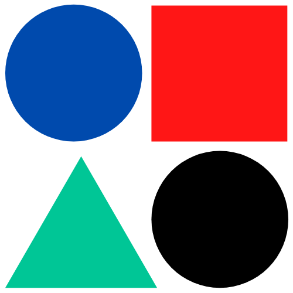

Bonjour à tous ! Je vais vous présenter sur ce petit site quelques applications mobiles que j'affectionne particulièrement. Vous pourrez découvrir pourquoi ! Je vous encourage aussi à vous les procurer. Bon courage à tous et utilisez vos écrans avec discernement.

Mes applications préférées
D'après Wikipédia, Reddit est un site web communautaire d’actualités sociales fonctionnant via le partage de signets permettant aux utilisateurs de soumettre leurs liens et de voter pour les liens proposés par les autres utilisateurs. Ainsi, les liens les plus appréciés du moment se trouvent affichés en page d’accueil. Fondé en 2005, Reddit contenait alors surtout du contenu sur la programmation et la science. Il ne cesse depuis de se diversifier et de s’ouvrir à du contenu plus grand public2. Ayant connu une explosion de croissance en 2010, en partie due à une baisse de popularité de son concurrent Digg3, en 2017, il se place comme le 8e site web le plus populaire au monde et le 4e aux États-Unis selon Alexa Internet4 (en savoir plus ...)
DUOLINGO
Duolingo est un site web et une application pour mobiles et tablettes (iOS, Android, Windows Phone), mais aussi en ligne via un navigateur WEB, sur ordinateur, destiné à l'apprentissage gratuit des langues. Il est conçu de telle façon que les utilisateurs progressant dans leur apprentissage contribuent à la traduction de pages web2. Ce service utilise le collaborat (crowdsourcing) pour la traduction de textes.
MEDIUM
Medium est une plateforme web de blog créée en août 20121 par Evan Williams et Biz Stone, les fondateurs de Twitter et Blogger. Le site offre une interface wysiwyg de blogging minimaliste2 conçue pour des textes longs, regroupés par « collections » (en partie éditorialisées3), ainsi que des fonctions de découverte, partage et recommandation. L'entreprise paye également certains auteurs professionnels, soit ponctuellement en freelance4 soit de manière plus régulière comme Joshua Davis et Joshuah Bearman (qui publient certains articles d'Epic Magazine sur la plateforme5).